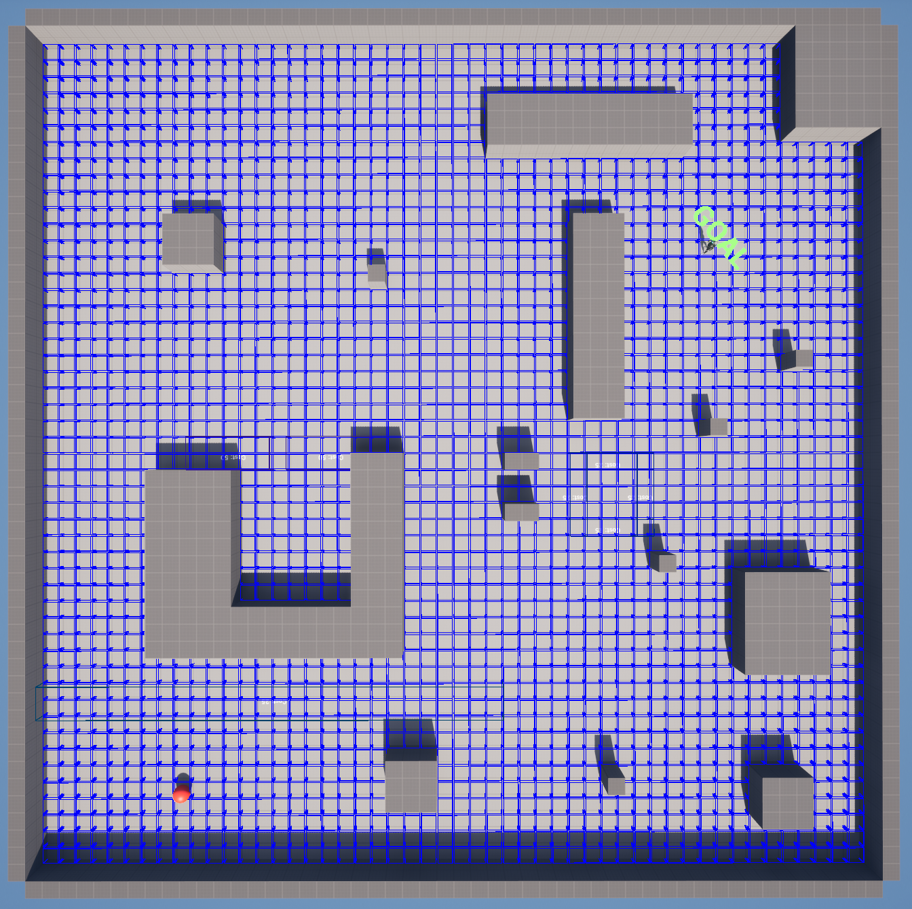
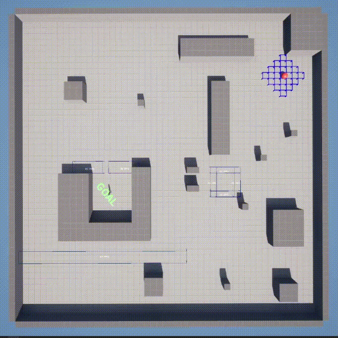
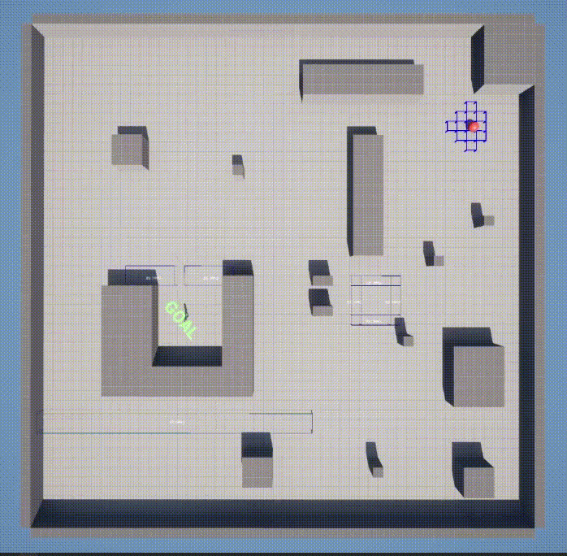
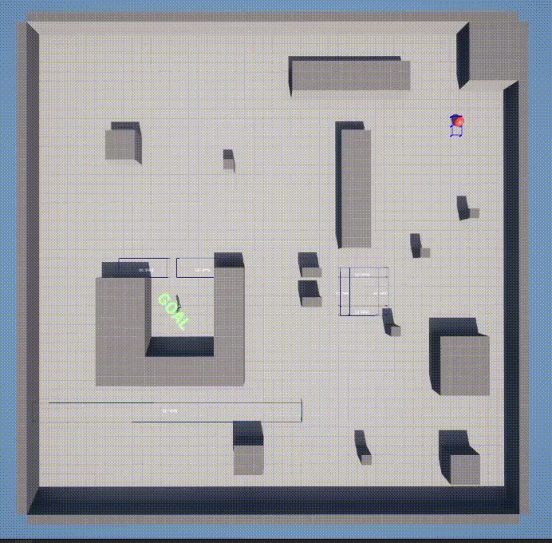
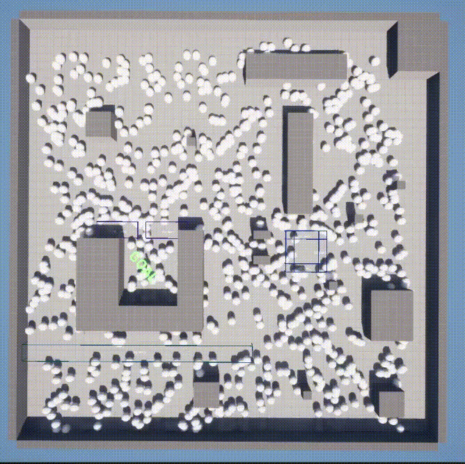

The following is just a small study with different graph based path finding algorithms in unreal engine. I was mainly interested in the flow field approach to path finding but decided to get an overview of the other related graph based path finding to have familiarity with them. My interest in the flow field based approach stems from a recent project of mine where im dealing with a large number of agents which would not be ideal with the other graph based algorithms i visited. Although, dijkstra and A* star would not have been viable in my use case I still found it worth while since all the graph based path finding algorithms I looked at had essentially the same algorithm. Therefore, understanding one graph algorithm helped me better understand the benefits of the other algorithms. The following below is the graph algorithm used for the three basic graph path finding algorithms I studied with all the individual details abstracted away. The fourth algorithm, flow field, is a bit different in that it must traverse through every node in the graph.
Graph->InitializeGraph(Grid);
if(Graph->SetStartTargetNode(GetNearestIndexTo(Start),GetNearestIndexTo(Target))){
while(Graph->HasRemainingNodes() && !Graph->HasFoundPath()){
Graph->GoToNextNode();
if(!Graph->HasFoundPath())
Graph->UpdateGraph();
}
}
The following is being does in Unreal Engine by mapping an area into a 2D array. Collision checks are done to check whether the node is traversable. Then ajacent nodes of a node are setup as neighbors which can be traversed to during the path finding algorithm. This in turn create a large graph that is a representation of the mapped area.
The Wavefront algorithm, the most basic of all of them. It doesn't account for traversal cost between nodes so it will search through and ignore the traversal cost volumes. All that is being done is doing a breath first search over a graph.
Dijkstra's algorithm varies from the previous in that it keeps track of node cost and will only visit the next node that results in the smallest total travel cost. Using this approach, traversal volumes can be added to the map to signify higher costs for traveling across specific regions. This does not exclude these regions from being traversed since there will come a point when traversing through them will result in a lower total traversal cost.
A star is the most effecient in comparison to the previous two but does require some additional calculations to achieve this effeciency. Along with keeping track of the traversal cost for the nodes, which is labeled as the GCost, it will also calculate a HCost at runtime. The HCost is the distance from the current node to the destination node. Then these are added together to get an FCost which is used to decided which traversable node should be visited next.
A star is great but once the number of agents being directed enters the hundreds or thousands it becomes impractical to use A Star for every path. The Flow Field approach instead does a pass on the entire navigation grid and calculates a vector pointing towards the next node that's part of a path to the destination. With this there is a 2d array of vectors that is indexed to by the AI agent when it needs to get the direction it needs to travel to reach the destination. This has the potential of have thousands of different AI agents moving towards a destination. The Following below is being done with 500 Agents.
Flow Field does enable the navigation of thousands of agents but having each of those agents be an Unreal Engine actor, let alone and moveable pawn, puts a limit on how many agents we can have due to limitations of the engine. In order to remedy this the agents can be represented using Entity Component System. This will allow the creation and processing of agents using only necessary data to allow for a larger number of agents being processed faster. In Unreal Engine ECS is refered to Unreal Mass using Entities, Fragments, and Processors. The following is using Unreal Mass where the entites each have a target location that then need to travel to next which is computed with the flow field vector. The also all have a shared fragment of a world subsystem which they can use to access the flow field of vectors. These are all operated on by a processor which calculates an agents next position based on a direction vector. Using this approach thousands of agents can be controlled instead of being at the behest of object oriented limitations. The following example below is being done with 10,000 agents.